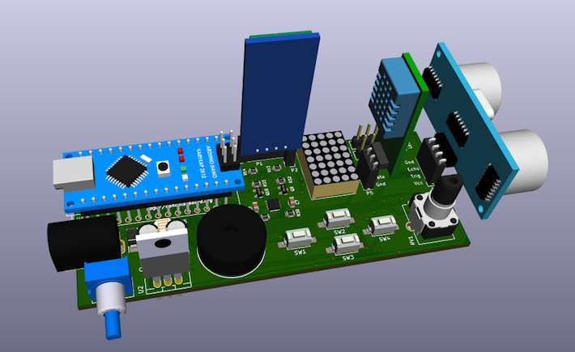

¿Qué es la Arduino NanoPlayBoard?
Es una placa de iniciación a la experimentación que permite el aprendizaje de electrónica básica y programación haciendo uso del microcontrolador Arduino Nano 3.x o compatibles.
Dispone de varios sensores, actuadores y puertos para la conexión con otras placas de forma que sea posible explotar parte de las funcionalidades de la plataforma Arduino.
Sensores
- Una fotoresistencia.
- Un potenciómetro.
- Cuatro pulsadores.
- Un acelerómetro de tres ejes.
- Un encoder incremental de 16 pasos/revolución.
Actuadores
- Un buzzer.
- Un led RGB.
- Una matriz de led’s.
Puertos
- Un zócalo hembra para conectar un detector de objetos por ultrasonidos.
- Un zócalo hembra para conectar un sensor de temperatura y humedad tipo DTH11/DTH22.
- Dos zócalos macho para conectar dos servomotores.
- Un zócalo hembra para conectar un módulo Bluetooth HC-05/HC-6.
Librería para la Arduino NanoPlayBoard
Hemos desarrollado una librería para facilitar el uso y el acceso a los recursos que ofrece la placa.
Instalación
- Descarga la librería NanoPlayBoard.zip.
- Abre Arduino IDE y selecciona
Programa > Incluir Librería > Añadir librería .ZIP. - Reinicia Arduino IDE.
- Ahora puedes acceder a los ejemplos en el menú
Archivo > Ejemplos > NanoPlayBoard.

Primeros pasos
Potentiometer
NanoPlayBoard board;
int value = board.potentiometer.read();LDR
NanoPlayBoard board;
int value = board.ldr.read();Buzzer
NanoPlayBoard board;
board.buzzer.playTone(440);LED RGB
NanoPlayBoard board;
board.rgb.write(255, 0, 0); LED Matrix
NanoPlayBoard board;
board.ledmatrix.print("H o l a m u n d o!");La librería también nos permite controlar la velocidad del scroll utilizada para visualizar el texto en la matriz de leds.
board.ledmatrix.setScrollSpeed(10);
board.ledmatrix.print("H o l a m u n d o!");